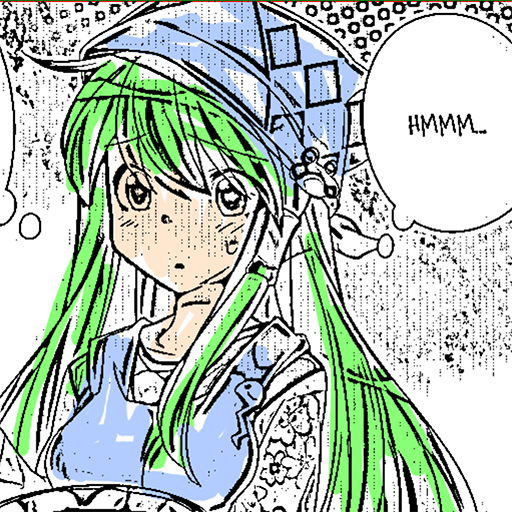
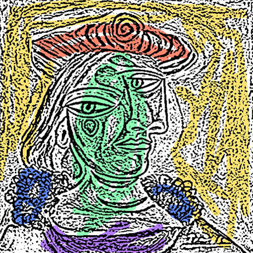
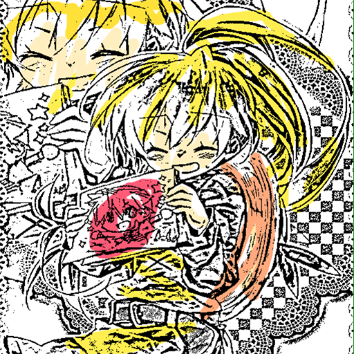

deepcolor
utilize the power of mathematical magic to automatically color a sketch or lineart
Details Try it » GithubExamples
Only line image [source]

Line image with color hints

Fine art [source (Picasso)]

Picasso with color hint

Confusing background

Heterochromia
My bad attempt at drawing